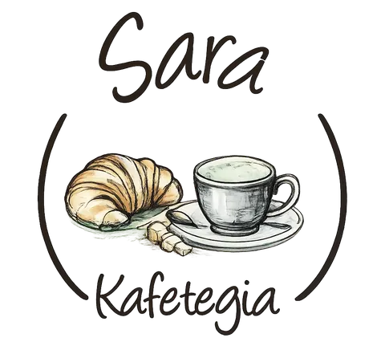
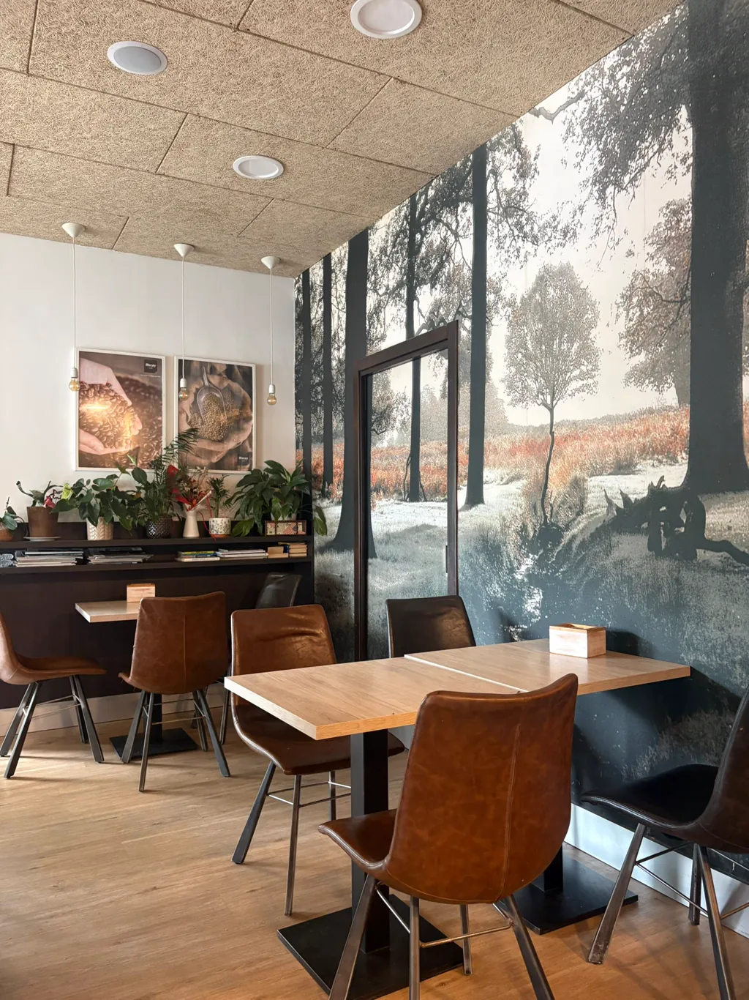

Cada mañana
Croissants y bollería
Croissants, napolitanas, donuts glaseados, palmeras y bollos de nata para empezar el día. Lo mejor, recién hechos a primera hora.


Café con arte, bollería recién horneada, pintxos en vitrina y vinos para la tarde. Todo lo que apetece, a cualquier hora.
Café de verdad, bollería recién horneada, bocadillos de vitrina y bebidas para la terraza. Si dudas, pregunta en barra.

Recién molido, bien extraído, servido como debe ser. Con leche de avena, soja o almendra sin coste extra.
Pregunta en barra por los cafés especiales del día.
Pan artesano que llega fresco cada mañana, bollería recién horneada y la tarta que haya ese día. Cambia a diario.
Para encargos de tarta o bandeja para grupo, llámanos con un día de antelación.

Bocadillos y pintxos preparados aquí, sin envasar. Lo que haya en vitrina ese día, elige en barra.
La vitrina cambia cada día. Pásate y mira qué hay.

Vino rosado, cerveza fría, infusiones o el zumo del día. Para quedarse en terraza con vistas al Bidasoa.
La terraza abre cuando el tiempo acompaña.
La carta puede variar según lo recién hecho del día. Pregunta en barra.
Cada mañana llenamos la vitrina de cosas ricas para acompañar el café. Esto es lo que más vuela.
Croissants, napolitanas, donuts glaseados, palmeras y bollos de nata para empezar el día. Lo mejor, recién hechos a primera hora.
Bizcochos, magdalenas y dulces sencillos, de los de toda la vida. Con opción sin gluten casi siempre.
Una tarta distinta cada día, según la temporada. Pregunta por la de hoy o encárgala para tu celebración.

Preparamos cualquier café y desayuno de la carta para llevar, durante todo el horario. Sin coste extra y listo en un momento.
También para la tarde: bocadillos, pintxos y algo para beber mientras. Pídelo aquí o para llevar.
Es el favorito de quien madruga para subir al monte Larun, de los que cruzan a Francia y de quien va con prisa al trabajo. Pídelo en barra y sigue tu camino.
Dónde estamos
Tenemos leche de avena, soja y almendra para cualquier café, sin coste extra. Cada día horneamos alguna opción vegana y, casi siempre, algo sin gluten.
Si tienes alguna alergia o intolerancia, dínoslo en barra: te informamos de los ingredientes de cada elaboración y te ayudamos a elegir con tranquilidad.
Pregúntanos lo que necesitesLa vitrina cambia cada día según lo recién hecho: croissants, napolitanas de chocolate, donuts glaseados, palmeras, bollos de nata, bocadillos de tortilla, jamón, queso… Lo mejor es pasarse y ver qué hay. Si tienes alguna preferencia, llámanos antes.
Sí. Preparamos cualquier café y desayuno de la carta para llevar, durante todo el horario. Es muy habitual entre quien sube al monte Larun o va de camino a la frontera con Francia.
Sí. Para grupos, cumpleaños o meriendas podemos preparar bandejas de bollería y café. Llámanos al 948 62 56 73 con un día de antelación y lo organizamos.
Aceptamos efectivo, tarjeta (también contactless) y Bizum. Para pedidos de grupo grandes, podemos preparar un ticket único.
Sí. Tenemos leche de avena, soja y almendra para cualquier café, sin coste extra, y cada día alguna opción vegana y, casi siempre, algo sin gluten. Pregunta en barra por las del día.
Acércate a Sara Kafetegia y pídelo en barra. Te lo preparamos al momento, aquí o para llevar.
